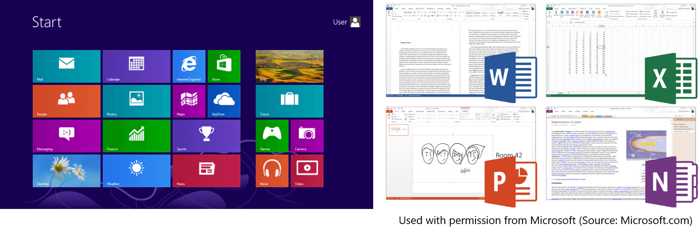

Background
Microsoft Dogfooding Events of Windows 8 and Office 2013 had been held since August 2012 in Microsoft Taiwan. By conducting Dogfooding Events, Microsoft was able to test these products internally and gather valuable feedback from its own employees, which could then be used to improve the final versions of the software.
These events provided employees with early access to the latest versions of Windows and Office, allowing them to use the software in real-world scenarios and identify any issues or bugs that needed to be fixed. Through this process of testing and feedback, Microsoft was able to improve the functionality, stability, and usability of the final products.
In addition to improving the quality of the software, Dogfooding Events also had another important benefit: they helped to build employee engagement and morale. By giving employees the opportunity to use cutting-edge technology before anyone else, Microsoft showed that it valued their input and contributions. This helped to foster a sense of ownership and pride among employees, who were able to see firsthand how their feedback and suggestions were incorporated into the final product.
Products
- Windows 8, succeeding Windows 7, was introduced major changes to the platform and user interface including a new start screen, Microsoft app ecosystem, and touch-friendly design.
- Office 2013, the successor to Microsoft Office 2010, supports online services and multi-touch interfaces.
